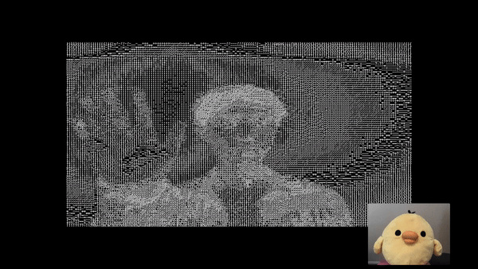
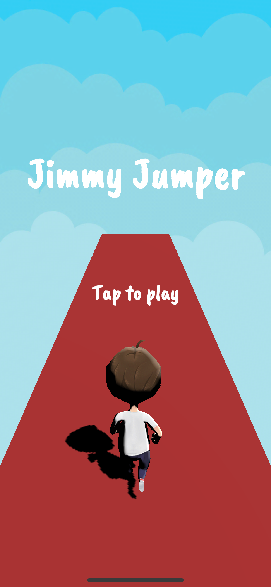
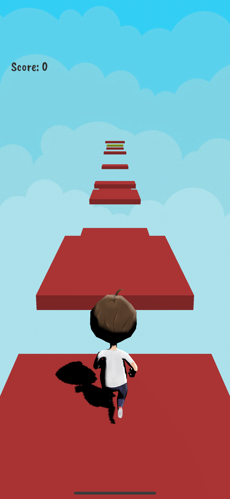
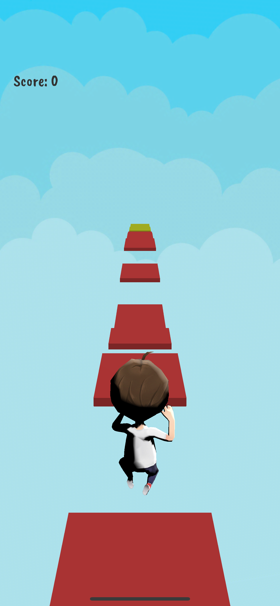
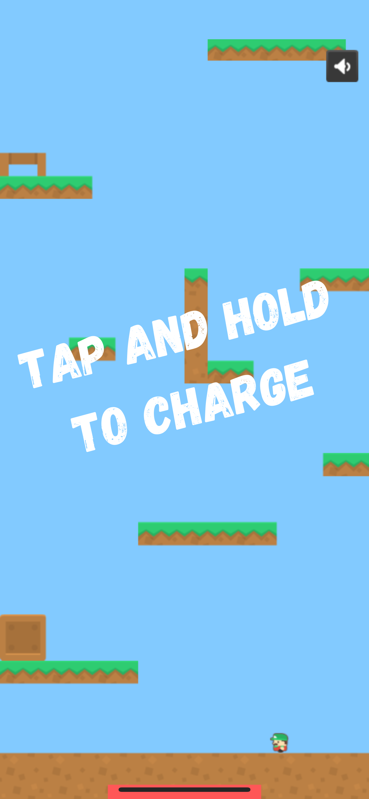
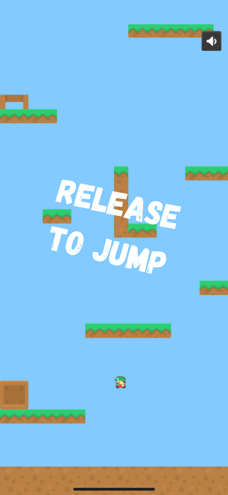
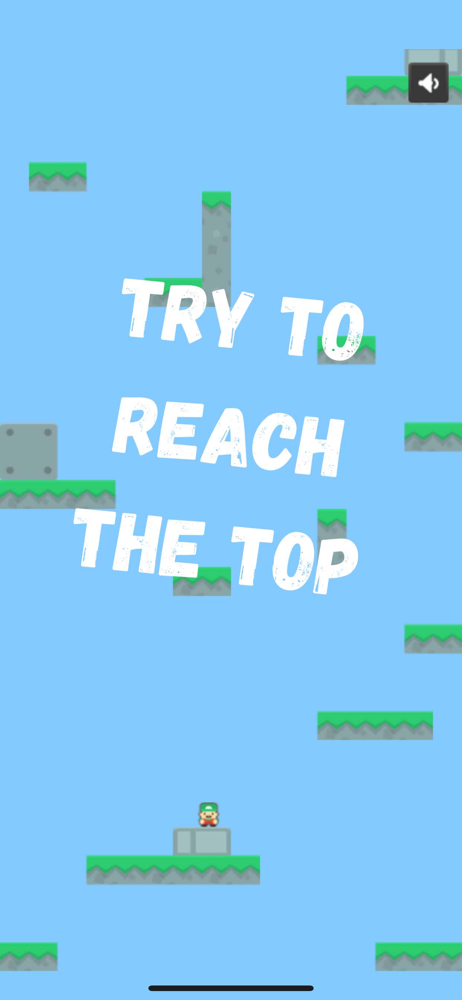
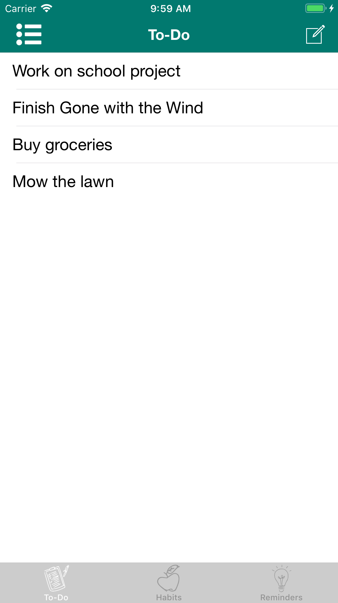
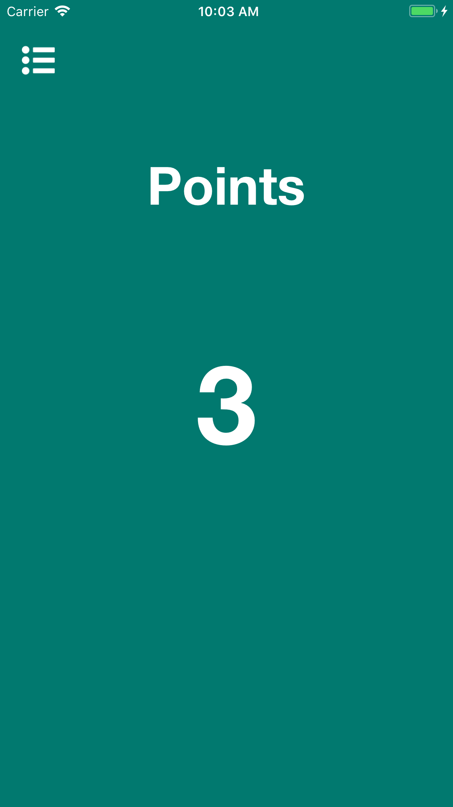
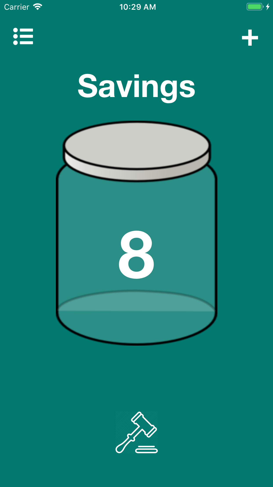

I recently developed Ascii Stream which won 2nd Best Overall Hack at IvyHacks 2020! Ascii Stream is a video call web app which uses ASCII art instead of video to save on bandwidth. Sending video can be expensive, but sending text isn't. Ascii Stream converts video to ASCII art locally, and uses PeerJS, an open-source wrapper around WebRTC, to send audio and ASCII art (as text) between users. Check it out on Github!
Jimmy Jumper is an endless running and jumping game developed in Unity. Since this was my first 3D game, I learned a lot about manipulating camera angles and building the game scene, as well as optimizing resources. I also use animations to trigger different events, and I randomly generate the game scene as the player runs, so no run is ever the same. Jimmy Jumper on the App Store.
  Johnny Jumper is a game developed with Phaser. I originally planned to make it a FaceBook Messenger game, but publishing on FaceBook is much harder than on the App Store. Even though technology is so advanced, it's very easy to have too much going on in the background at once, so I reduced the number of tile layers and used sub-maps instead of one big map to make it faster. Johnny Jumper on the App Store.
  I often find myself procrastinating on my work, even when I know I would be happier if I just did my work first. Then I could watch Netflix happily, rather than stressfully thinking about my assignments due the next day. I created TaskTime to combat procrastination, by gamifying to-dos and good habits. TaskTime allows you to earn points for tasks and habits, which you can spend on rewards such as watching Netflix or buying bubble tea. TaskTime on the App Store.
Side note: Around 6 months after publishing TaskTime, I tried to push an update, and it got rejected due to its similarity to another app on the App Store. I looked up the app, and someone took all the code from my Github and published it without changing a thing! Definitely a good lesson in keeping repos private.
  